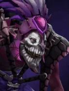

Shallow Grave
Active
Bless allied pieces with Shallow Grave, preventing the targets from dying while under its protection, no matter how close to death. The blessed ally takes +50% healing from all sources for the duration.
| ★ | ★★ | ★★★ | |
|---|---|---|---|
| Number of allied targets | 1 | 2 | 3 |
| Duration | 4 | 4 | 4 |
| Cooldown (s) | 15 | ||
| Mana cost | 100 | ||
- Shallow grave will first be given to allies hp lower than 50%.
Only a seasoned acolyte of the Shadow can properly perform the rite of preventing death.
Stats
| ★ | ★★ | ★★★ | |
|---|---|---|---|
| Health | 450 | 900 | 1800 |
| Mana | 100 | 100 | 100 |
| Armor | 1 | 1 | 1 |
| Magic resistance | 10% | 10% | 10% |
| Attack damage | 45–60 | 90–120 | 180–240 |
| Attack interval (s) | 1.2 | 1.2 | 1.2 |
| Attack range | 400 | 400 | 400 |
| Move speed | 500 | 500 | 500 |
 Troll · Voodoo Frenzy
Troll · Voodoo Frenzy
- (2) All allies gain +20 attack speed.
- (4) All allies gain another +50 attack speed (+70 total).
- (6) All allies gain +20 attack speed for each attack they land, for the rest of the battle, up to +120.
 Priest · Salvation
Priest · Salvation
Priests can't be mind controlled.
- (2) When you lose a round, take damage and survive while you have an empty board slot, you get a Tango (restores 1-8 courier HP).
- (4) At battle start, one Priest per empty board slot (highest level first) mind controls the highest-level enemy at or below its own level. The control lasts (Priest level x 2 + 1) seconds and ends early if the Priest dies.